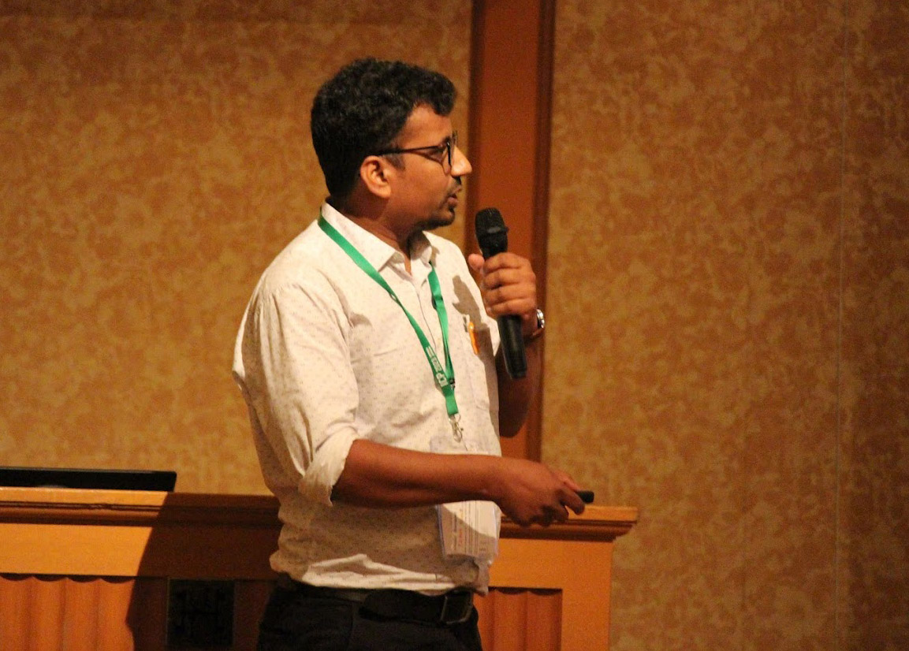

Research focus
Materials chemistry, spectroscopy, electrochemistry, organic synthesis, OLED-relevant emitters, and long-lived luminescent systems.
Profile
Assistant Professor in the Department of Chemistry at KL University (Deemed to be University). Research interests span materials chemistry, spectroscopy, photophysics, organic synthesis, electrochemistry, and device-facing photonic materials.

Biography
My scientific curiosity began with a simple question: why do different objects have different colours? Following that question led me through synthetic organic chemistry, excited-state spectroscopy, and finally to the design of long-lived organic emitters with real device potential.
At AURA Lab I lead a research programme on energy-efficient, lightweight, flexible, and non-toxic organic photonic materials for lighting, displays, imaging, sensing, security, and optical storage. We work across the full pipeline: design and synthesise emitter scaffolds, probe their excited-state behaviour with steady-state and time-resolved spectroscopy, rationalise structure–property relationships with theory, and evaluate translational potential through device-relevant measurements.
Before establishing AURA Lab at KL University in September 2025, I trained as a JST FOREST Fellow and UEC Postdoctoral Fellow at the University of Electro-Communications in Tokyo, as a C. V. Raman Postdoctoral Fellow at the Indian Institute of Science in Bengaluru, and as a Research Associate at the Indian Association for the Cultivation of Science in Kolkata. I completed my PhD in Chemistry at IISER Bhopal.
Academic & Research Trajectory
Sep 2025 — Present
Department of Chemistry, KL Deemed to be University, Andhra Pradesh, India
Leads AURA Lab and builds an independent research programme on spectroscopy, organic afterglow, OLED emitters, and functional photonic materials.
Feb 2025 — Aug 2025
Indian Association for the Cultivation of Science (IACS), Kolkata, India
Worked on computational materials design for organic semiconductor devices and advanced training in optoelectronic materials.
Apr 2024 — Jan 2025
University of Electro-Communications, Tokyo, Japan
Developed organic afterglow materials, devised imaging concepts, and contributed to device-oriented photonic workflows.
Apr 2022 — Mar 2024
University of Electro-Communications, Tokyo, Japan
Focused on afterglow imaging, persistent luminescence, organic materials design, and device fabrication.
Jan 2021 — Mar 2022
Indian Institute of Science, Bengaluru, India
Worked on purely organic long-lived emissive materials and OLED device fabrication.
Aug 2014 — Dec 2020
IISER Bhopal, India
Doctoral research on multichromophoric organic systems, solid-state emission, and long-lived luminescent materials.
Materials chemistry, spectroscopy, electrochemistry, organic synthesis, OLED-relevant emitters, and long-lived luminescent systems.
Peer review for journals including Nature Communications, Advanced Functional Materials, Advanced Optical Materials, J. Phys. Chem. C, Materials Chemistry Frontiers, and Small. Member of professional chemistry societies in India and the UK.
ORCID records show 2026 grants linked to advanced biomedical imaging and sensing using organic afterglow materials, including a programme supported by the Anusandhan National Research Foundation (ANRF), Government of India.